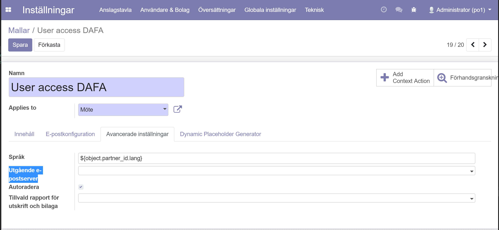

DAFA Report
This module contains a set of predefined templates for messaging such as email, eletters and soon sms. Messaging is automatically dispatched via NADIM.
More detailed flow documentation is available at
KVL user stories
and at
NADIM confluence page.
Table of contents
Configuration
Configuration for each communication channel is described below.
This template overrides the auth_signup.mail_template_user_signup_account_created template and is set to auto_install.
To configure email templates, you need to:
- Go to Tekniskt > Mallar ansd choose the following template:
- Ny kontomail till användare
- Set NADIM as default outgoing server:
- Note book > Avancerade inställningar > Utgående e-postserver > NADIM

That's it.